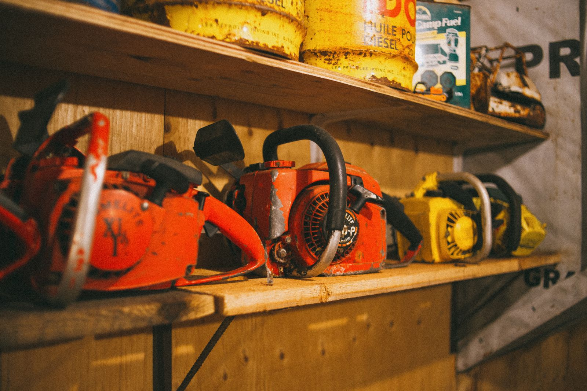
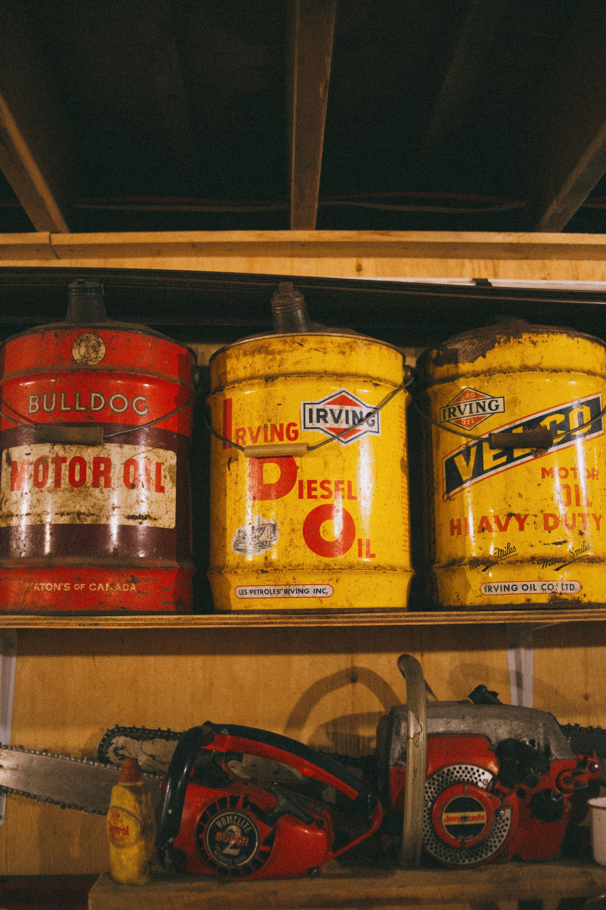

Small engine & Stihl repair · Bryan, Texas
The shop that texts you when your saw is ready.
Bryan Outboard Inc is a disabled-owned small business on N Texas Ave — Stihl sales, service and repair for chainsaws, outboards, mowers and trimmers, with a 4.5-star record built one honest repair at a time.

Stock photo (Pexels, photographer Erik Mclean) — not a photo of Bryan Outboard's own shop or inventory.
What we work on
Small engines, Stihl gear, and everything that starts with a pull cord
General categories of small-engine and Stihl service — confirm your exact model and job by phone.
Chainsaw repair & sales
Stihl chainsaws sold, tuned, and repaired — from a stuck starter cord to a full rebuild.
Outboard motor service
Outboard motor repair and maintenance for the boats that share the Brazos with everyone else.
Mowers & trimmers
Push mowers, trimmers and blowers — serviced, sharpened, and sent back home running.
Assembly service
Buy it here, and it leaves already assembled and ready to run — no box, no guesswork.
Stihl parts & accessories
Genuine Stihl parts, bars, chains and accessories in stock or ordered in.
Service guarantee
Repairs backed by a service guarantee — ask what it covers when you drop off.
Call (979) 822-6836 to confirm your specific make, model, and repair before you make the trip.
702 N Texas Ave
Old-school service, in a town full of shortcuts
Bryan Outboard Inc identifies as a disabled-owned small business, and it shows in how the shop runs: in-store pickup, onsite service calls, a wheelchair-accessible entrance and parking lot, and a straightforward service guarantee on repair work.
Reviewers describe exactly the kind of shop most towns have lost — staff who know the product inside and out, fair prices, and a text the moment your equipment is ready. Customers say they drive across town to this location specifically, past other stores that carry the same Stihl products.
Business details and attributes verified via Bryan Outboard's public Google Business listing, checked 2026-09-05. Full sourcing is in this demo's README.

On Google
What Google reviewers keep mentioning
Google groups its own reviews of Bryan Outboard and pulls out review lines itself as highlights. Here’s exactly what the listing shows — not our summary, not an invented quote:
“Good old fashioned small town service.”
“Customer service knows there stuff and are very helpful.”
“Great place to get stihl products repaired.”
- saw ×4
- chainsaws ×2
- product ×2
Full written reviews will appear here once connected — nothing invented, nothing edited, exactly what’s posted on Google.
4.5 rating · 51 reviews · highlighted lines and review-tag counts, all from Bryan Outboard's public Google Maps listing — verified 2026-09-05.
Hours
Google showed “Closed · Opens 8 AM Tue” when checked on 2026-09-05 — one data point, not a full week. Call or message to confirm before you plan a trip.
Call (979) 822-6836Get in touch
Something not starting? Bring it in.
Call and describe the equipment — chainsaw, outboard, mower, or trimmer. Same shop, same fair price, every time.
Call (979) 822-6836